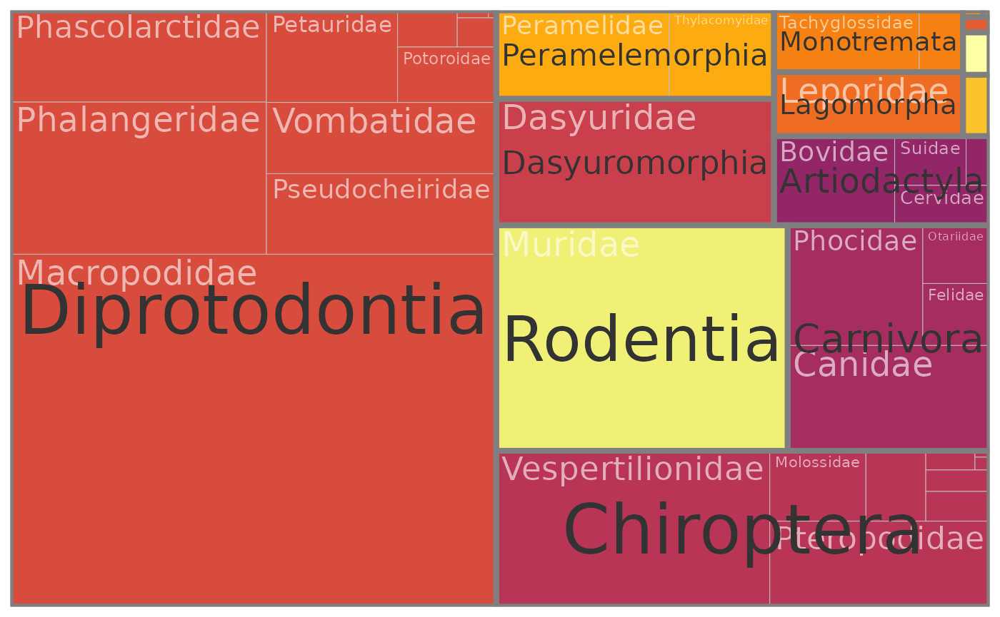

vignettes/taxonomic_information.Rmd
taxonomic_information.Rmdgalah provides multiple ways of retrieving taxonomic information, and the best method depends of the type of information required. Below, some use cases are outlined.
The simplest way to get taxonomic information is to use select_taxa. This function takes one or more scientific names and checks them against the ALA’s taxonomy service.
library(galah)
select_taxa("Mammalia")## search_term scientific_name
## 1 Mammalia MAMMALIA
## taxon_concept_id
## 1 urn:lsid:biodiversity.org.au:afd.taxon:e9e7db31-04df-41fb-bd8d-e0b0f3c332d6
## rank match_type kingdom phylum class vernacular_name issues
## 1 class exactMatch Animalia Chordata Mammalia Mammals noIssueBy default, this function shows the search term, the match (if any) within the ALA, and some information on higher taxonomy of that clade. Critically, it also returns a unique identifier for that clade, stored in the column taxon_concept_id. This identifer is the information that the ALA needs to return data that is specific to the taxon in question, i.e.:
ala_counts(taxa = select_taxa("Mammalia"))## [1] 3191636select_taxa can accept a vector or a data.frame of taxonomic names, and always returns a data.frame with the same number of rows as there are names to query.
One final, useful feature of select_taxa is that it works in reverse. That is, if you have a unique identifier and would like to know which taxon it refers to, you can find that out by setting is_id to TRUE:
select_taxa("urn:lsid:biodiversity.org.au:afd.taxon:97764bed-9492-4066-a45f-e5b0c6c4280d", is_id = TRUE)If you do not need the taxonomic identifier for a clade, but only want to know what higher taxa it is nested within, then you can use the search_taxonomy function.
search_taxonomy("Mammalia")## kingdom phylum class authority
## 1 Animalia Chordata Mammalia AFDThis function is particularly useful for moving down the taxonomic tree; i.e. to identify which clades are nested within the supplied taxon. For example, we can build and visualise all the families in class Mammalia as follows:
taxa <- search_taxonomy("Mammalia", down_to = "family")
library(collapsibleTree)
collapsibleTree(
taxa,
hierarchy = names(taxa)[-which(
names(taxa) %in%
c("kingdom", "phylum", "class", "authority"))],
root = "Mammalia"
)Note that if you are traversing more than 3 ranks, it might be more efficient to use ala_species, as search_taxonomy is inefficient when the search tree is large.
In combination with select_taxa, search_taxonomy can be especially powerful. For example, we can pass the result of our earlier search to select_taxa, and then use the resulting identifiers to get the number of records available for each mammalian family:
taxa_ids <- select_taxa(taxa)
family_counts <- ala_counts(taxa = taxa_ids, group_by = "family")
taxa <- merge(taxa, family_counts)
library(treemapify)
library(ggplot2)
library(magrittr)
library(viridis)
taxa %>%
ggplot(aes(area = count, fill = order, subgroup = order, label = family)) +
geom_treemap() +
geom_treemap_subgroup_border() +
geom_treemap_text(colour = "white", place = "topleft", reflow = T, alpha = 0.6) +
geom_treemap_subgroup_text(place = "centre") +
scale_fill_viridis_d(begin = .4, option = "B") +
theme(legend.position = "none")
A common use case for atlas data is to identify the list of species that occur within a clade, in a particular location, or according to some other criterion. This is provided by the ala_species function.
ala_species(
taxa = select_taxa("Heleioporus"))## kingdom phylum class order family genus
## 1 Animalia Chordata Amphibia Anura Limnodynastidae Heleioporus
## 2 Animalia Chordata Amphibia Anura Limnodynastidae Heleioporus
## 3 Animalia Chordata Amphibia Anura Limnodynastidae Heleioporus
## 4 Animalia Chordata Amphibia Anura Limnodynastidae Heleioporus
## 5 Animalia Chordata Amphibia Anura Limnodynastidae Heleioporus
## 6 Animalia Chordata Amphibia Anura Limnodynastidae Heleioporus
## species author
## 1 Heleioporus eyrei (Gray, 1845)
## 2 Heleioporus australiacus (Shaw & Nodder, 1795)
## 3 Heleioporus albopunctatus Gray, 1841
## 4 Heleioporus psammophilus (Lee & Main, 1954)
## 5 Heleioporus inornatus (Lee & Main, 1954)
## 6 Heleioporus barycragus Lee, 1967
## species_guid
## 1 urn:lsid:biodiversity.org.au:afd.taxon:cf991494-ccee-433d-b049-f2a0996a0a3b
## 2 urn:lsid:biodiversity.org.au:afd.taxon:20119b25-a27c-4174-b3e0-8639e8a21131
## 3 urn:lsid:biodiversity.org.au:afd.taxon:c1d18a1e-5aec-4441-aa3c-e0ac799f51e8
## 4 urn:lsid:biodiversity.org.au:afd.taxon:0efbf288-1526-4551-af83-52e4fb9dae59
## 5 urn:lsid:biodiversity.org.au:afd.taxon:16fcc761-685a-4527-b5e4-e6c7042ae2c6
## 6 urn:lsid:biodiversity.org.au:afd.taxon:c527388c-1cc7-4a10-800a-243b5a2dcd3c
## vernacular_name
## 1 Moaning Frog
## 2 Giant Burrowing Frog
## 3 Western Spotted Frog
## 4 Sand Frog
## 5 Plains Frog
## 6 Western Marsh Frogala_species is similar to select_taxa, in that it returns taxonomic information and unique identifiers in a data.frame. It differs in not being able to return information on taxonomic levels other than the species; and in being more flexible in supporting filtering based on other critera, e.g.:
ala_species(
taxa = select_taxa("Heleioporus"),
filters = select_filters(
stateProvince = "New South Wales",
year > 2010))## kingdom phylum class order family genus
## 1 Animalia Chordata Amphibia Anura Limnodynastidae Heleioporus
## 2 Animalia Chordata Amphibia Anura Limnodynastidae Heleioporus
## 3 Animalia Chordata Amphibia Anura Limnodynastidae Heleioporus
## 4 Animalia Chordata Amphibia Anura Limnodynastidae Heleioporus
## species author
## 1 Heleioporus australiacus (Shaw & Nodder, 1795)
## 2 Heleioporus inornatus (Lee & Main, 1954)
## 3 Heleioporus eyrei (Gray, 1845)
## 4 Heleioporus barycragus Lee, 1967
## species_guid
## 1 urn:lsid:biodiversity.org.au:afd.taxon:20119b25-a27c-4174-b3e0-8639e8a21131
## 2 urn:lsid:biodiversity.org.au:afd.taxon:16fcc761-685a-4527-b5e4-e6c7042ae2c6
## 3 urn:lsid:biodiversity.org.au:afd.taxon:cf991494-ccee-433d-b049-f2a0996a0a3b
## 4 urn:lsid:biodiversity.org.au:afd.taxon:c527388c-1cc7-4a10-800a-243b5a2dcd3c
## vernacular_name
## 1 Giant Burrowing Frog
## 2 Plains Frog
## 3 Moaning Frog
## 4 Western Marsh FrogAlthough we have focussed above on functions that are built to integrate taxonomic concepts, the more general select_filters can be used to build more flexible queries using the taxonConceptID field. This can be useful for paraphyletic concepts such as invertebrates:
invertebrate_filter <- select_filters(
taxonConceptID = select_taxa("Animalia")$taxon_concept_id,
taxonConceptID != select_taxa("Chordata")$taxon_concept_id)
head(ala_counts(filters = invertebrate_filter, group_by = "class"))## class count
## 1 Insecta 3108071
## 2 Gastropoda 823557
## 3 Malacostraca 507565
## 4 Arachnida 491501
## 5 Maxillopoda 462335
## 6 Polychaeta 256505